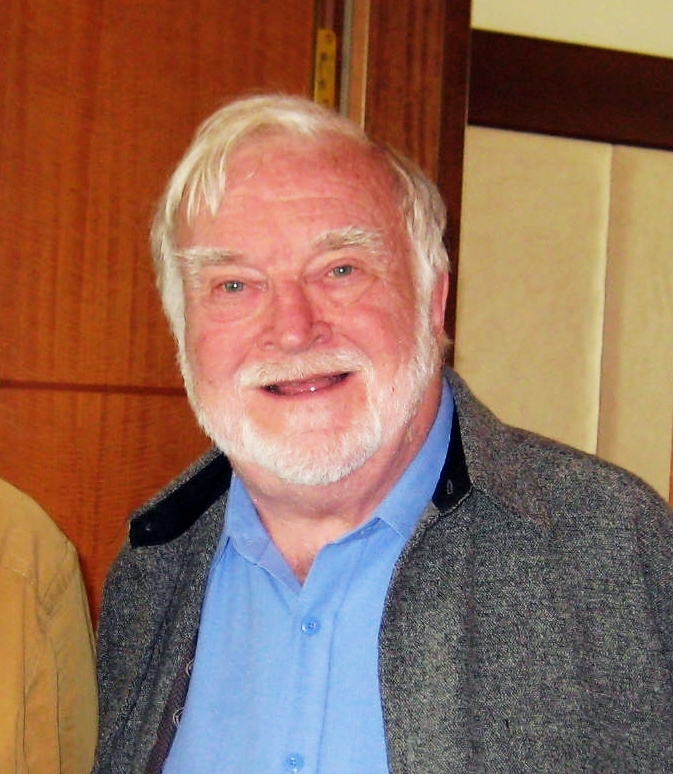

1990 · 2008
놀이의 과학이 확립되다하위징아의 철학이 심리학·신경과학으로 옮겨간 시기
하위징아 이후,
놀이는 과학이 됐다.
1938년에는 문화사가의 직관이었지만, 20세기 말 이 아이디어는 측정 가능한 심리학으로 자리잡습니다.
무엇이 사람을 몰입하게 하는가, 그리고 놀이 없이 인간은 왜 병드는가 —
두 권의 책이 이 질문에 답을 남겼어요.
1990
M. 칙센트미하이『Flow』 · 최적 몰입 경험

심리학자 칙센트미하이는 예술가·운동선수·과학자를 수십 년 관찰하며
"가장 충만한 순간"을 정리했습니다 — 이름은 flow(몰입).
①
도전 × 능력의 균형. 너무 쉬워도 어려워도 몰입은 무너진다.
②
즉각적 피드백. 한 동작이 바로 결과로 보인다.
④
시간감각의 왜곡. 자의식이 사라지고 몇 시간이 순식간에.
2008
Stuart Brown『Play』 · 놀이의 결핍이 병이다
정신의학자 스튜어트 브라운은 범죄자·환자 수천 명의 생애를 역추적해
충격적인 패턴을 발견합니다 — 놀이의 결핍이 성인의 정신건강과 창의성을 파괴한다는 것.
①
놀이는 선택이 아니다. 포유류의 뇌는 놀지 않으면 건강히 크지 못한다.
②
목적 없는 행위. "왜 하느냐"에 답이 없는 활동이 창의의 자궁.
③
어른에게도 필수. 놀이의 반대는 노동이 아니라 우울.
④
진지한 놀이. 하위징아의 serious play가 임상으로 증명됐다.
▲ 바이브 코딩의 심리학적 정체
자연어로 말 걸기 → 즉각 실행 → 즉각 피드백 → 다시 시도. — 바이브 코딩은 우연히 flow의 조건을 전부 충족하고,
동시에 브라운이 말한 "목적 없는 진지한 놀이"의 공간을 연다.